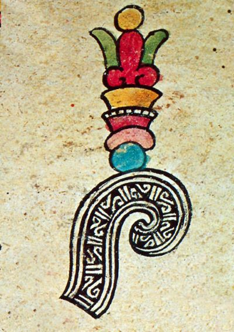
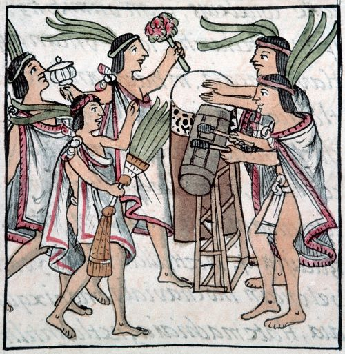
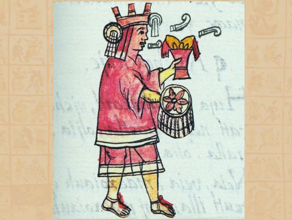
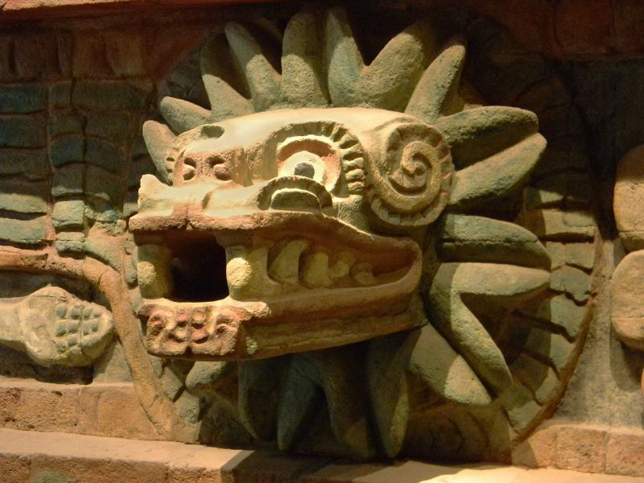
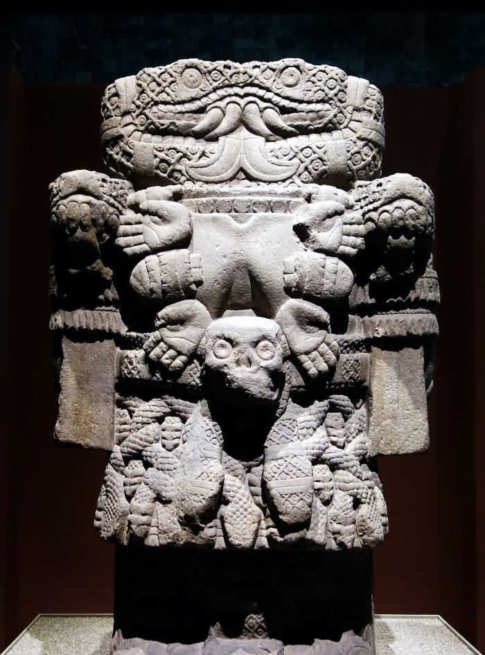
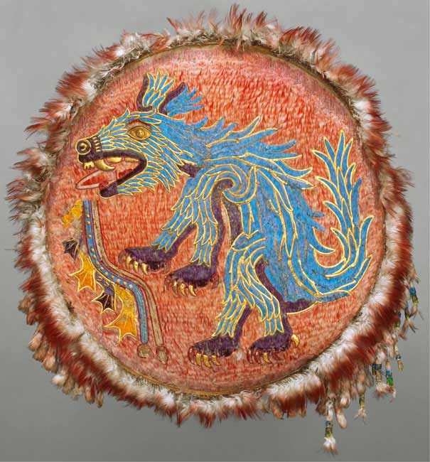

Aztec art, infleunced by other indigenous groups such as the Olmec, Teotihuacan, and Maya, is seen as an important aspect to Aztec culture. Forms of art such as music, poetry, and sculptures were commonly used to honor and praise their gods.
The Aztecs created a rich variety of art pieces from massive stone sculptures—to small crafted pottery.
The Meaning
Undestanding Aztec art fundamentally dives down to religion and symbolism, as both seem to be interwoven. Studying Aztec art shows a mix of religion and stories, with important gods like Huitzilopochtli, the god of war and the sun, and Quetzalcoatl, the feathered serpent god. The bright colors, fancy designs, and unique shapes in Aztec art aren't just for looks, they actually mean something special connected to the gods. It's like their way of talking about spiritual things through their art.
Poetry
The Nahuatl language spoken by the Aztecs did not have a dedicated word for poetry, but rather used a metaphor "flowers and songs" to represent the meaning.
Poetry was the key to the Aztec world and in their mythology. It was their philosophy, their theology. Poetry to the Aztecs, came from their god Ometeotl; the father and the mother, the embodiment of masculine and feminine.

Illustration of Flower Songs
Flowers Are Our Only Garments
Flowers are our only garments,
only songs make our pain subside,
diverse flowers on earth,
Ohuaya ohuaya.
Perhaps my friends will be lost,
my companions will vanish
when I lie down in that place, I Yoyontzin -Ohuaye!-
in the place of song and of Life Giver,
Ohuaya ohuaya.
Does no one know where we are going?
Do we go to God's home or
do we live only here on earth?
Ah ohuaya.
Let your hearts know,
oh princes, oh eagles and jaguars
that we will not be friends forever,
only for a moment here, then we go
to Life Giver's home,
Ohuaya ohuaya.
Flowers Are Our Only Garments -- Nezahualcoyotl
The Music Of Aztecas

Illustration of Aztec Dancers and Instruments
Roles
In Aztec society, music played various roles, with certain individuals having specific responsibilities related to it. A few roles:
Musicians and Singers: These individuals were skilled in playing instruments and singing. They had a crucial role in performing sacred hymns, cantares, and everyday songs. Musicians and singers were valued for their ability to convey messages through music and enhance religious ceremonies.
Dancers: Dancers were an integral part of Aztec musical performances, especially during ritual ceremonies. They complemented the music with intricate dance movements, contributing to the overall spectacle and spiritual significance of the event.
Ceremonial Leaders: In religious rituals, there were likely ceremonial leaders who directed the musical performances. They played a role in orchestrating the timing and flow of the music and dance to align with the ceremonial context.
Music Practices
The Mexica people had different types of music, and a big part of it was sacred hymns. These songs praised great rulers and gods like Ometeotl, Tlaloc, Huitzilopochtli, and Tezcatlipoca. The hymns told stories about what the gods did and were used to ask for things like rain or success in battle. They were performed on special occasions and came with complex dances. Besides the serious cantares, Aztec music also included more fun songs like love songs and those about everyday life. While cantares were for religious stuff, the Mexica had a bunch of other songs that added excitement and variety to their music scene.

Illustration of Ghost Song Practice
Music And Aztec Warriors
The music for Aztec warriors, especially during times of battle, was associated with the cantares, also known as "ghost songs." These mystical songs recounted historical deeds and were performed to motivate and prepare warriors for battle. Specially trained singers, dancers, and actors took part in these ritual ceremonies. The music and dance were believed to help warriors enter a trance-like state, establishing a connection with ancestors and gods. The reenactment of past battles and human sacrifices in these performances aimed to inspire and energize the warriors, enhancing their psychological readiness for warfare. The music served both a practical and spiritual purpose in preparing and bolstering the Aztec warriors for the challenges they faced on the battlefield.
Hand-Crafted Art
Sculptures

Sculpture of Quetzalcoatl
Aztec sculptures were influenced by a blend of cultural, religious, and artistic factors. The Aztecs drew inspiration from their rich mythological traditions, cosmology, and the diverse Mesoamerican cultures that preceded them, such as the Olmec and Toltec civilizations. The symbolic importance of deities, animals, and natural elements in Aztec religion also played a significant role in shaping their sculptures.
Oldest Known Sculpture:

Sculpture of Coatlicue
One of the oldest known Aztec sculptures is the Coatlicue statue, dating back to around 1500 BCE. Although the exact age and origin of the statue are debated among historians, it holds immense cultural and artistic significance. The Coatlicue sculpture represents the Aztec earth goddess, associated with fertility and life-death-rebirth cycles. The name "Coatlicue" means "skirt of snakes" in Nahuatl, reflecting the deity's distinctive attire.
More Sculptures:
Aztec Calendar Stone: Perhaps one of the most iconic Aztec sculptures is the Aztec Calendar Stone, also known as the Sun Stone. Carved in the early 16th century, it weighs around 24 tons and serves as a complex representation of Aztec cosmology. The central figure is the sun god Tonatiuh, surrounded by symbolic representations of time, creation, and celestial elements.
Tlaloc Statues: Tlaloc, the Aztec god of rain, was frequently represented in sculptures. These statues often depicted Tlaloc with distinctive goggles, representing his association with water and fertility. Tlaloc sculptures were placed in various contexts, including temples and ceremonial centers.
Eagle Warrior and Jaguar Warrior Sculptures: Aztec military elite, known as Eagle Warriors and Jaguar Warriors, were honored with sculptures showcasing their distinctive attires. These warriors played significant roles in Aztec warfare and were symbolically associated with powerful animals, reflecting strength and courage.
Feather Workers and Artworks
Aztec feather workers were skilled artisans who specialized in the creation of intricate featherwork, a highly esteemed and sophisticated craft in Aztec society. These craftsmen were part of a specialized class dedicated to the meticulous art of working with feathers, known as amanteca or amantas.
Feathered Cloaks: One of the most notable creations of Aztec feather workers was the feathered cloak, often worn by elite members of society, including nobles and priests. These cloaks were made by meticulously attaching brightly colored feathers to a textile base, creating elaborate and ornate patterns.
Shields and Headdresses: Feather workers crafted shields adorned with feathers, combining functionality with artistic expression. Additionally, headdresses featuring vibrant plumes were created for ceremonial and ritualistic purposes. These headdresses often symbolized the religious and social status of the wearer.
Mosaics and Ritual Objects: Feathers were used to create intricate mosaics and adorn various ritual objects. Containers, masks, and banners were among the items decorated with featherwork, serving both aesthetic and ceremonial functions.

Image of Aztec Feather Work
Featherwork was deeply symbolic in Aztec culture, representing the connection between the earthly and divine realms. The vibrant colors and intricate designs symbolized the beauty of nature and were associated with deities and sacred rituals. Owning and wearing feathered items signified prestige and social status.
Feathers were considered sacred in Aztec religious beliefs; the use of feathers in ceremonial attire and ritual objects played a crucial role in religious ceremonies, symbolizing the presence of the gods and the divine. Aztec feather workers demonstrated remarkable artistic skill and craftsmanship. The precision required to create detailed patterns and images with tiny, delicate feathers showcased the technical prowess of these artisans. Featherwork was considered a high art form, and the resulting creations were valued not only for their aesthetic appeal but also for the technical expertise involved.
Aztec feather workers held a unique and revered position in Aztec society, contributing to the visual richness of the culture through their exquisite creations. The feathered items they produced not only served practical purposes but also played a vital role in religious ceremonies, symbolizing the interconnectedness of art, spirituality, and social hierarchy in Aztec civilization.